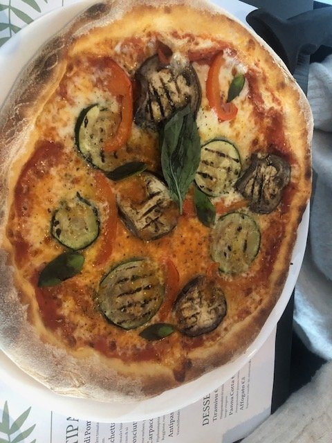
Pizza Contadina
Gegrilde courgette, aubergine en paprika, fior di latte, San Marzano D.O.P.
€ 13,00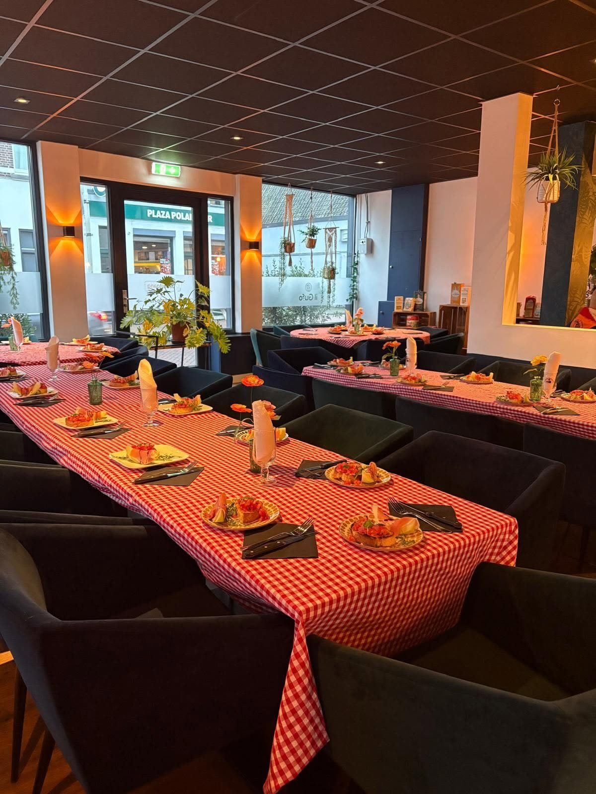
Dunne bodem, fior di latte en San Marzano-tomaten, met pasta, antipasti en een goed glas Italiaanse wijn erbij. Toe: huisgemaakte tiramisu of limoncello.
Een korte kaart met pizza's, pasta's en antipasti, gemaakt met goede Italiaanse producten. Een greep uit de kaart:

Gegrilde courgette, aubergine en paprika, fior di latte, San Marzano D.O.P.
€ 13,00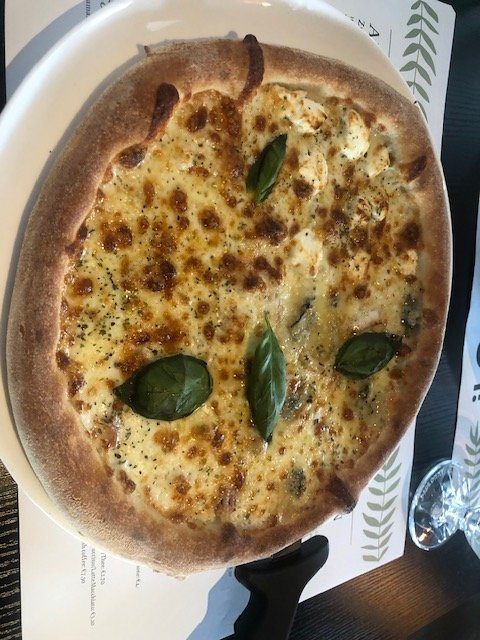
Gorgonzola, geitenkaas, taleggio en fior di latte
€ 16,00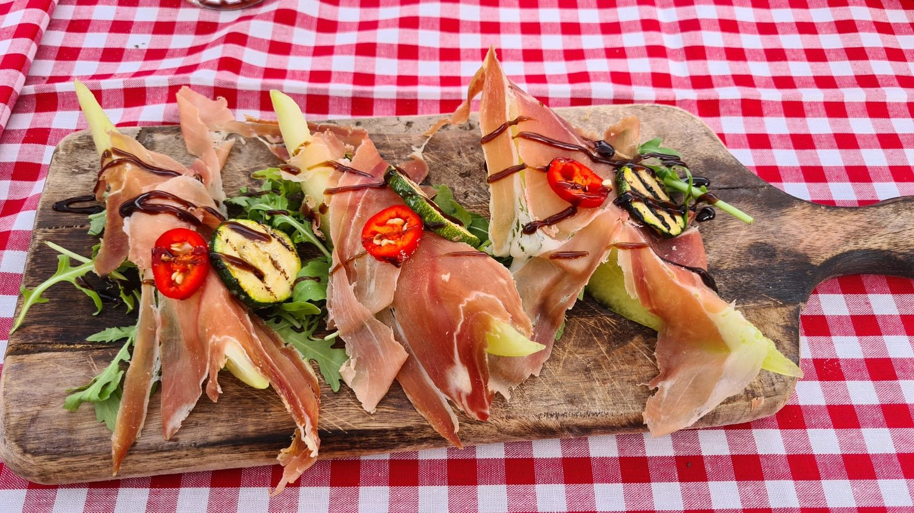
Verse meloen, parmaham, balsamico en basilicum
€ 8,00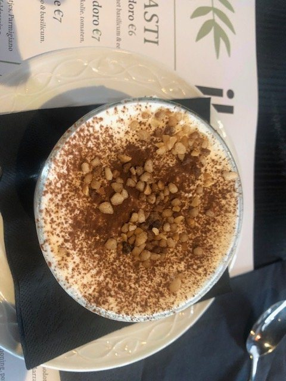
Huisgemaakt, met mascarpone, amaretto en lange vingers
€ 8,00Binnen zit je in een licht, modern restaurant. Bij mooi weer staan de tafels buiten op de Kade, onder de parasols.
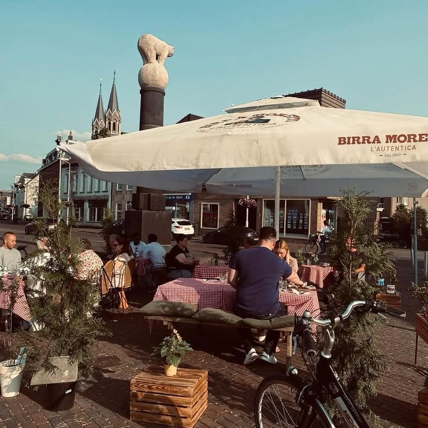
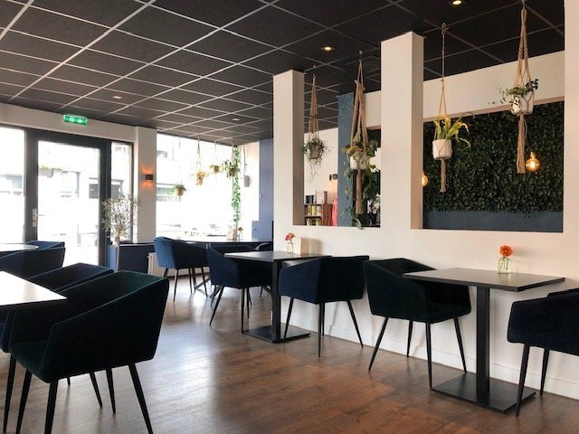
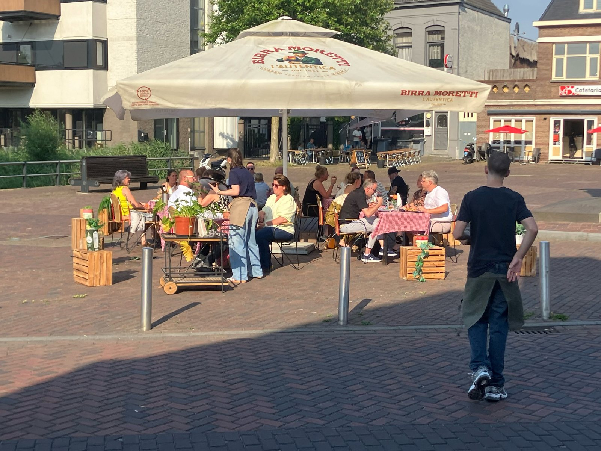
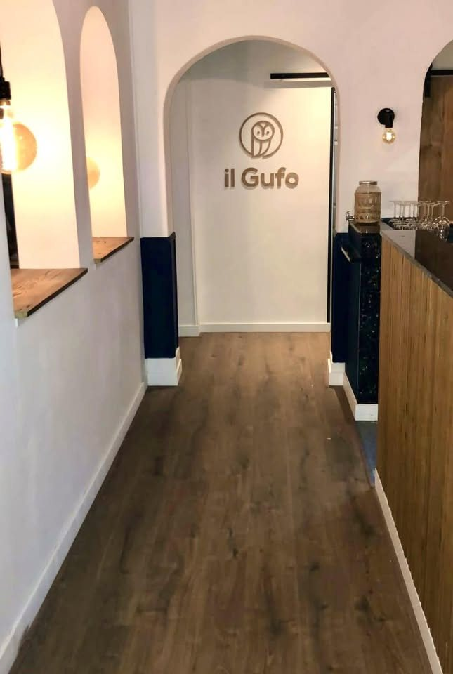
"Echte wat je noemt Italiaanse stijl, goede dunne smaakvolle bodem met precies de juiste hoeveelheid vulling erop. Goede ingrediënten en goed gebakken."
Berteet.nu"Heerlijk gegeten op het terras van Il Gufo. Jong maar super beleefd en vriendelijk team in de bediening. Het eten is heerlijk. Mooi opgemaakt."
Christeleet.nu"Echt nieuwe aanwinst voor Roosendaal. Heerlijke antipasta en top pizza’s. Goede wijn op de kaart."
Jolandaeet.nu"Gastvrij ontvangst, een oprecht de fijnste pizza sinds tijden gegeten. Wat leuk is dat de eigenaar echt geeft om zijn gasten, bij Il Gufo ben je ook echt te gast."
Arie Zonneveldeet.nu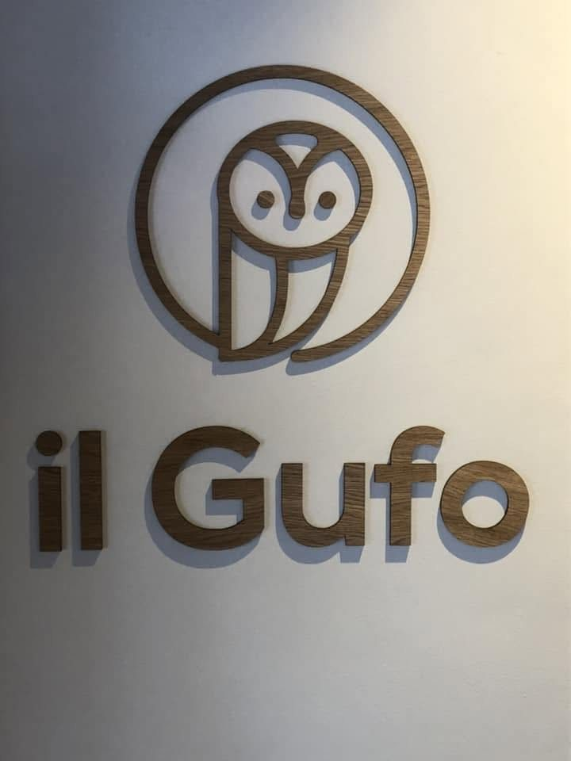
Il Gufo is Italiaans voor 'de uil'. Sinds 2022 bakken we aan de Kade in Roosendaal pizza op de traditionele Italiaanse manier: een dunne bodem, niet te veel beleg en goede producten.
De kaart is bewust niet te groot. Zo blijft alles vers, van de antipasti tot de huisgemaakte tiramisu. Daarbij schenken we Italiaanse wijnen, Birra Moretti en onze eigen limoncello.
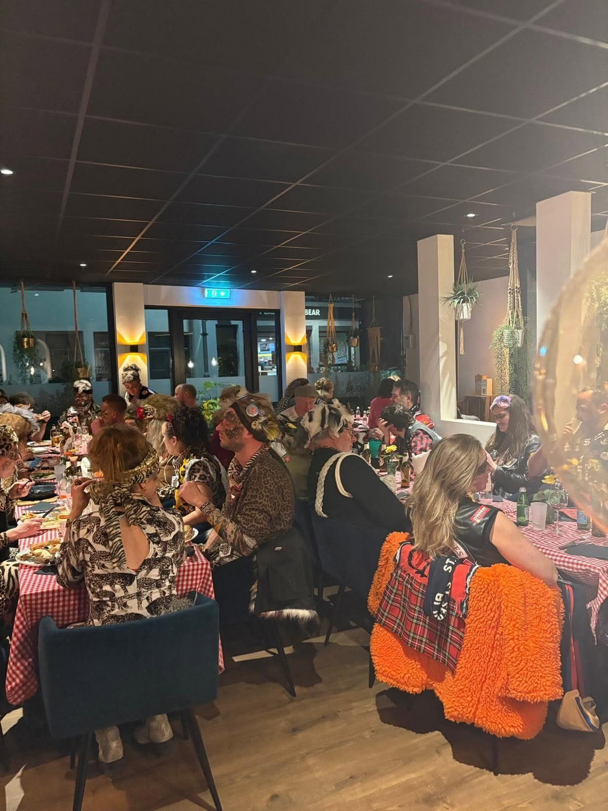
Een verjaardag, een diploma of gewoon een avond met een grote groep: we zetten de tafels graag aan elkaar. Laat even weten met hoeveel jullie komen, dan houden we plek vrij.
Bel ons, stuur een WhatsApp of mail. We houden graag een plekje voor je vrij.
Je kunt ons bellen of appen voor een reservering. Ook voor groepen.